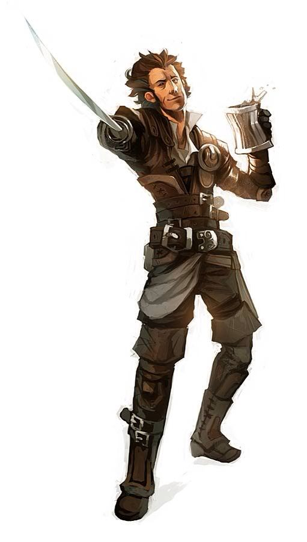

Name: Iskandar Lionheart
Public Name: Andar Alsudi
Nickname: Andar
Age: 32
Gender: Male
Appearance: 
Role: Drunk
Personality:
When going through his day-to-day activity, Andar does his task on his own pace; a slow, comfortable one where he doesn’t need to think too hard or put too much effort. Even in conversation, Andar goes on his own pensive relaxed pace, where his tone doesn’t need to be too energetic nor does his voice need to be loud. With his my-own-pace attitude, Andar is very accepting of others as he wants other to let him follow his own rhythm. Of course he will let them go on their own pace.
He has quite a pessimistic and apathetic look on life in general, which, when coupled with his drooped eyes, give him a pensive air. His airy attitude doesn’t mean he lack motivation. When set upon a goal, Andar will go for it with all of his power – and at his own pace. He may not be hardworking, but his strong determination to go about leisurely makes him crafty when needed.
Background:
He was not one to show off, but Andar had royalty blood in him. This was no other because of the machination of his mother, who, being a cunning courtesan with desire for gold, managed to trick the young prince (very young at the time) into sleeping with her. This was of course in the past, and the prince had turned into the king. Nonetheless, the itsy bitsy matter of the existence of a bastard son made Andar lived quite lavishly from the crown’s money.
But that was in the past.
Andar’s mother was already in her 30s when she slept with the prince. She expired at the age of 50. Quite a long life, really. Of course, Andar, was now left on his own device. He could enter the castle, reveal his status as a bastard prince, and lived lavishly. Desirable? Of course not.
Instead of running to the throne, Andar cut his connection with the royal family, hiding with the money his mother ‘earned’ from the crown. He went on many small business ventures, but eventually settled for being a smuggler and informant. He was widely known as a frequent patron of Stag Crown Tavern.
His existence in the court, of course, was a black mark on the royal family’s reputation. While his existence was known to the royal family, he was more of a rumour to the nobility in general.